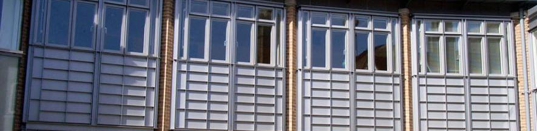

Buildings, especially related to natural and hybrid ventilation in which improved design of the air flow can help reduce heat losses. This work is also being used in developing new strategies for airborne infection dispersal in hospital environments such as the new Papworth Hospital in Cambridge (Prof Andy Woods)
Lubricants, to reduce frictional resistance in moving systems, including engines and axles. Friction modifiers have the potential to reduce energy consumption by about 10% and as we learn more about these system behave further savings should be possible (Prof Alex Routh; Prof Stuart Clarke)
Control systems for refrigeration have the potential to make the refrigeration much more efficient and thereby reduce energy consumption (Prof Colm Caulfield)